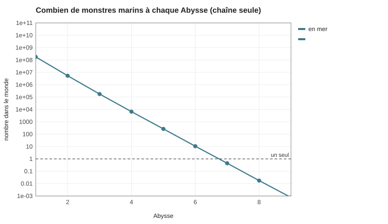

BIO-012 — La vie marine
Les bases : hors de Sera, les autres continents ont surtout des monstres, ou les poissons dans l'océan, et certains poissons sont des monstres ; la bête en sursis ne concerne que les vertébrés terrestres ; la bioamplification et les Abysses (SIM-22 Les Abysses) ; la pluie de l'Anneau (PLA-010 L'Anneau, la Lune Sœur et les Éclats) ; les courants (PLA-012 Les océans). Les calculs sont dans SIM-23 Les océans.
1. Pourquoi la mer est pleine de poissons, et pas de monstres
- L'eau retient le Chaos 30 fois plus que l'air (PHY-005 Le champ du Chaos), mais l'océan est immense et profond : le Chaos qui y tombe se dilue sur des kilomètres de profondeur. Presque partout, la mer est calme.
- Un poisson, dans une mer calme, a la chair d'un mortel ordinaire : il reste un poisson. Il n'a pas besoin de la protection de Kélia, contrairement aux bêtes de la terre ferme.
- Les monstres marins vivent là où la mer est chargée. Il y a trois sources :
- la bande de pluie de l'Anneau (35°–45°, au nord comme au sud) : la glace chargée de Chaos tombe dans la mer et fond en surface ;
- la mer du Portail, autour de Tawurt, dont le Chaos est emporté par les courants ;
- les sources chaudes des grands fonds, le long des dorsales. Les volcans recrachent le Chaos que le noyau de fer a avalé (PLA-004 Géologie du monde), et ce sont les grands fonds, la nuit éternelle des monstres.
2. La pêche
Les côtes à remontée d'eau froide ne couvrent que 0,1 % de l'océan, mais donnent près de la moitié des poissons : l'eau profonde qui remonte est riche, et la chaîne alimentaire y est courte. Les côtes ordinaires donnent l'autre moitié. La haute mer, 90 % de la surface, est un désert.
| Zone | Ce qu'on y pêche | Pour qui |
|---|---|---|
| La côte ouest de Sera, courant froid | sardines, anchois, thons : la plus riche pêcherie de Sera | Kemazo, qui sale et sèche le poisson pour ses armées |
| La côte ouest de Khodom, au large du Désert de Brume | la même richesse | les tribus de la côte (Tortues, Poissons totémiques), et un désert qui vit de la mer |
| Les côtes chaudes de l'est de Sera | poissons de récif, de delta, de mangrove | Naora, Khal'daras, Arhamya |
| Les mers froides du sud | poissons gras, algues | les Hejeti (BIO-011 L'alimentation des peuples) |
| La bande de l'Anneau | des poissons, et des monstres marins : une pêche dangereuse et riche (chair à purifier, noyaux) | les pêcheurs de monstres, les chasseurs de noyaux |
3. Les monstres marins
Le calcul (le modèle de SIM-22 Les Abysses, appliqué aux mers chargées : la bande de l'Anneau et la mer du Portail) :
| Abysse | Masse typique | Dans le monde |
|---|---|---|
| 1 | 300 kg | ≈ 180 millions |
| 2 | 1 t | ≈ 5 millions |
| 3 | 3 t | ≈ 180 000 |
| 4 | 8 t | ≈ 6 700 |
| 5 | 20 t | ≈ 270 |
| 6 | 50 t | ≈ 10 |
| 7 et au-delà | plus de 100 t | aucun en permanence par la chaîne seule |

Ce que ça dit :
- La mer a sept fois plus de monstres que la terre aux Abysses bas : la bande de l'Anneau couvre 62 millions de km² de mer, contre moins d'un million de km² de cœurs de territoires à terre.
- Au sommet, autant de monstres qu'à terre, une dizaine d'Abysse 6, mais des géants : 50 tonnes, la taille des plus grandes baleines. La loi des 10 % limite le nombre ; seule la taille change.
- En mer, on ne s'affine pas, on grandit. À terre, un monstre fort grandit puis s'affine, parce qu'un corps trop lourd se brise sous son poids (SIM-08 Le corps et le Chaos). Dans l'eau, le corps flotte : la taille ne coûte presque rien. Les monstres marins grandissent toute leur vie. C'est la règle d'affinage de leur catégorie.
- Les Léviathans : les Abysses 6 de la mer, des monstres de 50 tonnes et plus, une dizaine dans le monde, chacun avec son nom et ses routes. Autour de Tawurt, on les appelle les « Léviathans de brume ».
- Les grands fonds : autour des sources chaudes, une vie sans lumière, nourrie de Chaos comme les écosystèmes réels des sources hydrothermales sont nourris de chimie. Personne ne sait ce qui y vit.
3 bis. Les grandes figures de la mer
Les trois sources de Chaos sont là où les monstres marins naissent et se concentrent ; les courants et les migrations les répandent ensuite dans toutes les mers. Les noms sont en Logar.
| Figure | Catégorie | Ce que c'est |
|---|---|---|
| Amamu, « celui qui avale l'eau » (le Kraken) | Primordial marin, Abysse 8, unique | un céphalopode géant, l'invertébré le plus intelligent qui soit. La chaîne alimentaire ne mène pas au-delà de l'Abysse 6 : il est monté hors de la chaîne, en avalant des navires, leurs équipages et leurs mages, siècle après siècle. À l'Abysse 8, il n'existe qu'un monstre par type. Il vit dans la fosse la plus profonde de l'Océan de l'Ouest, près d'une source chaude, sous la route des pirates |
| Muisifeti, « l'eau du désordre » (le Triangle) | Anomalie | un éclat de la Lune Sœur tombé au fond de l'Océan de l'Ouest, dans la bande de 35° à 45°N : du fer saturé du Chaos du dieu des Dimensions, devenu une source ancrée sous la mer. Les boussoles s'affolent (le fer et le champ magnétique couplé au Chaos) ; un brouillard permanent (un îlot de chaleur sur une mer froide) ; l'espace se plie : des courants qui n'existent pas, des navires qui réapparaissent ailleurs, ou à une autre époque. Les mangeurs de règles y sont attirés |
| Iterujeti, « le fleuve éternel » (le Serpent de mer) | Draconique marin | une branche de guivres partie en mer, où l'on grandit sans s'affiner : un corps de serpent de plusieurs centaines de mètres |
| Les Hesumu, « les chanteuses de l'eau » | Spectraux | des « dieux ratés » nés de la peur et du désir des équipages. On les entend dans le brouillard ; on y entend ce qu'on désire |
| Les Depetehati, « les bateaux-cadavres » | Nécro-intégrés | des équipages restés attachés à leur navire, qui dérivent dans le Grand Courant du Sud |
| L'Océan de Brume de Tawurt | Élémentaires | des îles qui apparaissent et disparaissent, des vagues vivantes : des formes de brume et d'eau entretenues par le flux du portail |
4. Ce que ça donne pour le monde
- La bande de l'Anneau est une mer de monstres, au nord comme au sud. Les routes maritimes l'évitent, ou la traversent vite. Maakar flotte au-dessus d'elle.
- Le Grand Courant du Sud porte le Chaos tout autour du monde : il fait des mers du sud le domaine des Léviathans.
- Les pêcheries froides nourrissent les armées : Kemazo et ses poissons séchés.
- Les Hejeti vivent en aval du portail (PLA-012 Les océans) : leurs eaux sont plus riches en monstres, et en noyaux.
Liens
PLA-012 Les océans · SIM-23 Les océans · SIM-22 Les Abysses · BIO-010 Les monstres · MON-000 Classification des monstres · BIO-011 L'alimentation des peuples
- Ryther (J. H.), Photosynthesis and fish production in the sea, Science, 1969.
- Pauly (D.) et Christensen (V.), Primary production required to sustain global fisheries, Nature, 1995.
- Goldbogen (J. A.) et al., Why whales are big but not bigger, Science, 2019.
- Cartwright (D. E.), Tides: A Scientific History, Cambridge University Press, 1999.